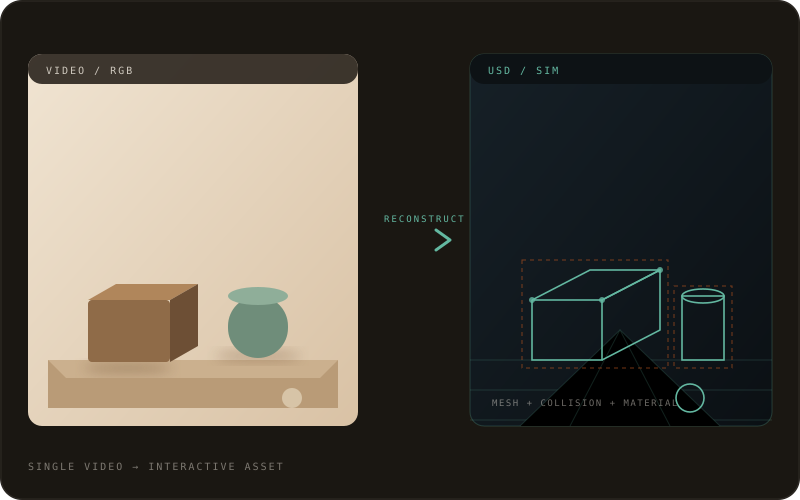

01 / CAPTURE
Start with a video.
A short handheld capture with a known scale reference. Estimate camera poses and object masks before touching geometry.
Project · 2026
A compact pipeline for reconstructing appearance and interaction-ready geometry, with a side-by-side real-versus-sim validation loop.

The bottleneck is not generating a pretty mesh. It is producing an asset that is geometrically aligned, physically plausible, and visually comparable to the capture. A model that looks right from one angle can still fail the first contact.
This sample pipeline keeps the comparison honest: reconstruct from a short capture, assemble a USD asset with collision and material, then replay the same interaction in simulation and put the two views side by side. The numbers below are placeholders — replace them with your own project.
A short handheld capture with a known scale reference. Estimate camera poses and object masks before touching geometry.
Lift geometry, simplify the mesh, add collision proxies, and bake materials. Every asset gets a card: source, license, scale, and physics profile.
Load the USD in the simulator, replay the same trajectory, and compare appearance and contact behavior against the capture.

 REAL / RGB
SIM / USD
REAL / RGB
SIM / USD
Drag to compare. Match the pose, then compare geometry, material, shadow, and contact. A single view is never enough.
@misc{li2026real2sim,
title = {Real2Sim: From a Single Video to Interactive Assets},
author = {Li, Shouzhe},
year = {2026},
howpublished = {Project page},
note = {Sample project; replace with your own metadata},
url = {https://github.com/ShouzheLi}
}